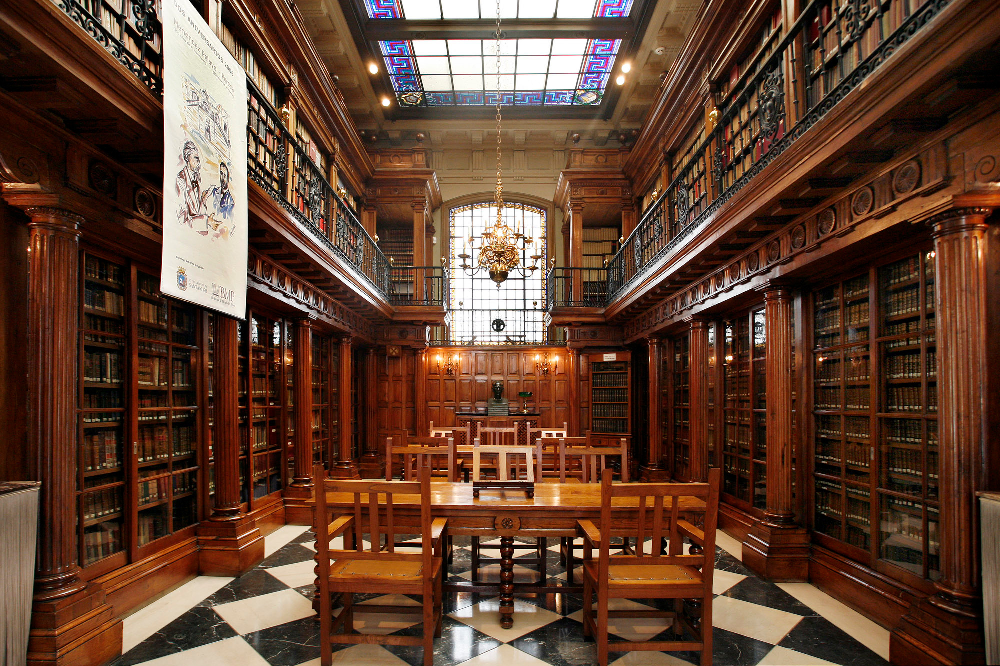
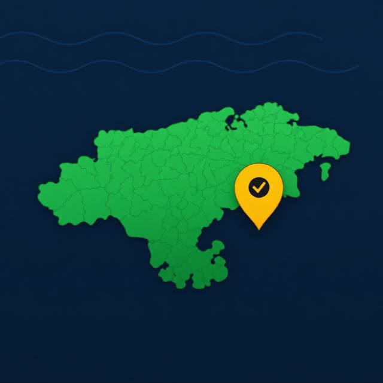
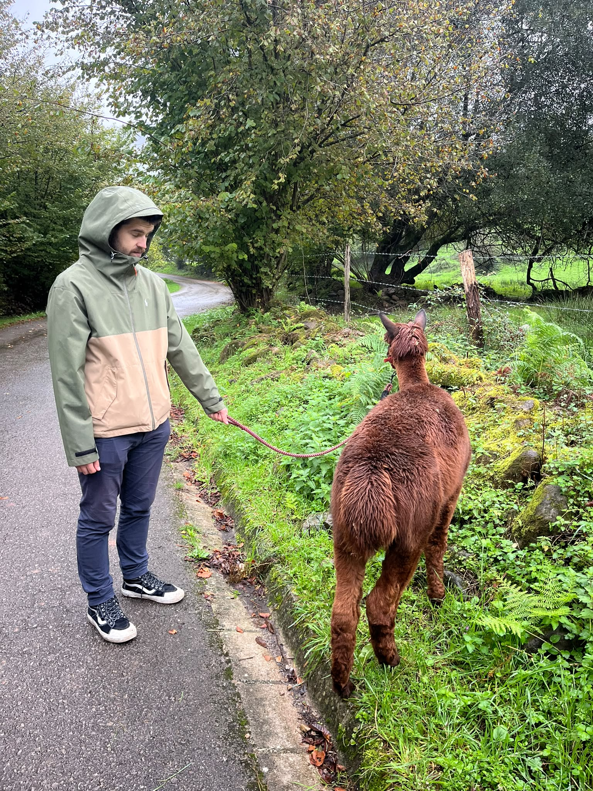

Yalopise Presunto patrocinadorIntroducción
Todavía recuerdo aquel amanecer en que mi padre me llevó por primera vez a visitar el Cementerio de los Libros Olvidados.
Las cosas podían haber sucedido de cualquier otra manera y, sin embargo, sucedieron así.
Los libros son espejos: sólo se ve en ellos lo que uno ya lleva dentro.
Índice
La sombra del viento
El Cementerio de los Libros Olvidados
Carlos Ruiz ZafónCada libro tiene alma
Cada libro, cada tomo que ves, tiene alma. El alma de quien lo escribió, y el alma de quienes lo leyeron y vivieron y soñaron con él.1
Pocas cosas marcan tanto a un lector como el primer libro que realmente se abre camino hasta su corazón.
El destino no hace visitas a domicilio, hay que ir a por él.
- Los libros son espejos: sólo se ve en ellos lo que uno ya lleva dentro. ↩
Marina
Carlos Ruiz ZafónLo que nunca sucedió
Marina me dijo una vez que sólo recordamos lo que nunca sucedió.
Todavía recuerdo aquel amanecer en que mi padre me llevó por primera vez a visitar el Cementerio de los Libros Olvidados.
El camino
Daniel, el Mochuelo
Miguel DelibesDe cualquier otra manera
Las cosas podían haber sucedido de cualquier otra manera y, sin embargo, sucedieron así.
El progreso no consiste en aniquilar hoy el ayer, sino, al revés, en conservar aquella esencia del ayer que tuvo la virtud de crear este hoy mejor.
El hombre se hace viejo muy pronto y sabio demasiado tarde.
Municipio Patrocinado: Penagos
Este lago, en el que está prohibido el baño, tiene junto a él una explanada de hierba y alguna zona boscosa, desde la cuál salen distintas rutas y donde se puede tranquilamente hacer un picnic. Además, junto a él está el hábitat de los elefantes, que se puede ver desde fuera y sin necesidad de pagar, aunque si no tienes suerte los animales estarán muy lejos y apenas podrás distinguirlos.
Hablando de animales, hay un pueblo dentro del municipio, Llanos, que tiene una granja de alpacas que organiza visitas guiadas. Este lugar se llama Alpacas de la Tierruca, cuesta 16€ y estás ahí unas dos horas. La visita comienza con una pequeña explicación sobre los animales y lo que se hace en la granja, seguida de un buen rato en el que pasear a los animales, acariciarlos, abrazarlos y darles todo el cariño que quieras. También se les da de comer y te enseñan la manera artesana de tratar el pelo. La alpaca más molona de todas se llama Elvis y somos amigos.

Agradecimientos
Muchas gracias a ti, mi estimado lector.
Al ser una edición especial, no hay pregunta de Trivia...
¿O sí?
espero que hayas disfrutado leyendo por lo menos una fracción de lo que yo lo he hecho escribiendo
Para sugerencias, comentarios, opiniones o cartas al director, contáctame directamente (: